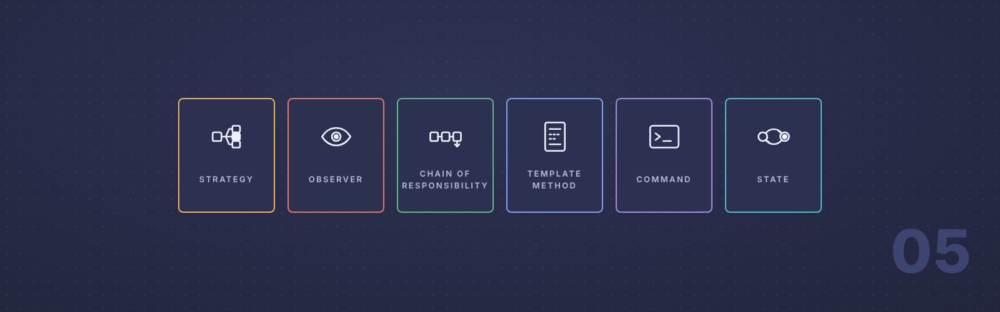

Unit 5: Design Patterns III – Behavioural Patterns
In brief: I applied the Strategy pattern to password storage in Python, with 31 tests. One store hashes new passwords with its current algorithm, verifies older hashes with the algorithm named inside them and upgrades them at the next login, and it moved from PBKDF2 to scrypt while running. The pattern removed the if/elif chain but not the decision: one lookup remains, and because stored data drives it, it has to be treated as untrusted input.

This unit introduces six behavioural patterns, Strategy, Observer, Chain of Responsibility, Template Method, Command and State, which define how objects interact and communicate. It examines the Observer pattern in cybersecurity systems and asks for the Strategy pattern to be applied in a project. My password store, its tests and a walkthrough notebook are the unit’s first artefact. The second is my contribution to Collaborative Discussion 2, a Strategy refactoring of a payment processor. My seminar preparation, including the Observer case study and the small login monitor I built for it, and my reading notes follow.
Reflection
Structured using the What? So what? Now what? model (Rolfe, Freshwater and Jasper, 2001).
What?
Unit 5 moved from how objects are created and composed to how they communicate. I read Parts I to III of Nesteruk (2022), concentrating on the six behavioural patterns the unit names: Chain of Responsibility, Command, Observer, State, Strategy and Template Method (chapters 13, 14 and 20 to 23). For the practical exercise I applied Strategy to password storage: a store that hashes new passwords with its current algorithm, verifies older hashes with the algorithm named inside them and upgrades them at the next login, with 31 tests (Artefact 1). For Collaborative Discussion 2 I refactored the payment processor (Artefact 2), and for the case study I built a small login monitor with the Observer pattern.
So what?
Nesteruk (2022, ch. 23) admits he is tempted to merge Strategy and Template Method into a single ‘Skeleton Method’, because both define the outline of an algorithm in one place and its details in another. The difference is that Strategy uses composition and Template Method uses inheritance, so Template Method ‘can only be static’. My artefact showed why that matters. Hashing guidance changes, and OWASP (no date) recommends rehashing when the user next authenticates, so a store has to keep running while its algorithm changes. With composition, the same store moved from PBKDF2 to scrypt in one call and every older hash still verified. With inheritance I would have needed a new store and a copy of every record.
The discussion guidance claims that Strategy lets new payment methods be added ‘without modifying existing code’. My tests confirm this for the processor, which no longer contains a branch, but something still has to turn the text ‘paypal’ from a form into a class, just as the password store has to turn the name at the front of a stored hash into a strategy. Nesteruk’s own dynamic strategy is chosen with a switch in set_output_format() (2022, ch. 22). Strategy does not remove the decision; it moves it into one lookup. That turned out to be the real gain. A single read-only table is easy to audit and, as with the factories in Unit 3, it can refuse what it does not recognise (Nesteruk, 2022, ch. 3).
The lookup also raised a security problem I had not expected from a behavioural pattern. Because a stored hash chooses which strategy runs and how much work it does, a tampered database row asking for a trillion iterations would turn every login into a denial of service. Each strategy therefore range-checks the settings it reads before doing any work, and the store accepts only the strategies it was given; the tests show such hashes refused in under a millisecond. Choosing behaviour at run time means that something at run time is doing the choosing, and that input has to be treated as hostile.
One limit remains. LegacySha256 exists only to verify old unsalted hashes, so it refuses to create one. It is a HashingStrategy that cannot stand in for the others, which breaks the Liskov substitution principle from Unit 2. Nesteruk (2022, ch. 14) meets the same problem with commands that cannot be undone and suggests splitting the interface in line with interface segregation. I kept one interface and recorded the limit in a test, but a cleaner design would separate a verifier from a hasher.
The Observer case study changed how I read Nesteruk’s chapter 20, most of which deals with unsubscription, reentrancy and thread safety before concluding that no implementation is ideal. In a security monitor, unsubscription is itself an attack surface. MITRE (2026) describes adversaries who ‘disable, degrade, or tamper with security tools’, and Python’s runtime audit hooks deliberately ‘cannot be removed or replaced’ (Dower, 2018). My monitor therefore lets required observers refuse removal and stops one failing observer from silencing the rest. A further test showed that an alert subscribed before the lockout policy missed the lock it depended on. This is the ordering problem from Unit 4 again, and it contradicts Nesteruk’s claim that decorators can be applied in any order (2022, ch. 9). Observer separates the subject from its observers, but not the observers from each other.
Now what?
I will split HashingStrategy into separate verifying and hashing interfaces and update the legacy test to match. In the monitor I will make the dependency between the alert and the lockout policy explicit, probably by letting the policy pass events on as a Chain of Responsibility rather than relying on subscription order. In the discussion I have asked peers whether a dictionary of Python functions would be enough, since Nesteruk (2022, ch. 22) treats lambdas as strategies; I will compare their answers with my view that a class earns its place when a strategy has several operations and an identifier. More generally, whenever behaviour is selected from data, whether a stored hash, a plug-in name or a deserialised message, I will use a read-only allow-list and test it with hostile input. The password store is a natural starting point for the authentication component of the capstone project.
Artefact 1: Password Storage Built with the Strategy Pattern
Practical exercise. The design is in password_hashing.py, 31 unit tests and the module’s doctests are in test_password_hashing.py, and the walkthrough notebook is unit5_strategy_pattern.ipynb. Needs Python 3.10 or later and no third-party packages; run the tests with python -m unittest -v test_password_hashing and the demonstration with python password_hashing.py. password_hashing.py also passes mypy --strict.
The exercise asks for the Strategy pattern to be implemented in a project so that an algorithm can be chosen and replaced without changing the code that uses it. I chose password storage because the recommended algorithm and its cost settings really do change, and a system has to keep verifying old hashes while it writes new ones. The pattern’s three roles are each a class: the abstract strategy HashingStrategy, the concrete strategies Pbkdf2Sha256, Scrypt and the verify-only LegacySha256, and the context PasswordStore. Figure 1 shows how they depend on each other.
![UML class diagram of the password store. The context PasswordStore holds a current HashingStrategy and a dictionary of accepted strategies keyed by identifier, and a read-only view of the stored hashes. It offers set_strategy, set_password, check_password, which verifies with the strategy named in the stored hash and rehashes with the current one if it is out of date, and import_hash; a protected _strategy_for method is the one lookup. The abstract HashingStrategy declares an identifier and the abstract methods hash and verify, plus needs_rehash and owns. Pbkdf2Sha256 with 600,000 iterations, Scrypt with n of 2 to the 17, r 8 and p 1, the verify-only LegacySha256, and a dashed box for a new strategy that needs no edit, all extend HashingStrategy. The client main builds and switches the store. A note explains that every stored hash names its strategy and settings, that settings are range-checked before any work, and that digests are compared with hmac.compare_digest.](artefacts/unit5/figures/u5_class_diagram.png)
Figure 1: Class diagram of the password store.
Table 1 maps each part of the exercise to the code that meets it and the test or notebook result that shows it.
| Requirement | Implementation | Evidence |
|---|---|---|
| A family of algorithms, each encapsulated | PBKDF2-HMAC-SHA256, scrypt and legacy SHA-256 are separate classes behind the abstract HashingStrategy | A contract test runs every strategy through the same checks; HashingStrategy() raises TypeError |
| Interchangeable | PasswordStore uses only the strategy interface and names no concrete class | A syntax-tree check finds no concrete strategy and no branch on an algorithm name in the store |
| Chosen at run time | set_strategy() changes the algorithm for new hashes; the previous one stays accepted so its hashes still verify | The demonstration moves a running store from SHA-256 to PBKDF2 to scrypt |
| Flexible and reusable | A strategy written elsewhere plugs in, and out-of-date hashes are upgraded at the next login | A strategy defined only in the test file works without editing password_hashing.py |
| Demonstration | main() prints each step of the migration | The demonstration test and the notebook output below |
Table 1: Each part of the exercise and the evidence for it.
Further tests treat stored hashes as untrusted input. The store accepts only strategies it was given, and each strategy range-checks the cost settings it reads, so a tampered hash asking for a trillion iterations is refused instantly rather than tying up the server. An unknown user still costs one hash, so response times do not reveal which user names exist, and digests are compared with hmac.compare_digest. The defaults follow the OWASP Password Storage Cheat Sheet (OWASP, no date). Three tests record the limits discussed in the reflection: the choice of strategy has moved into a lookup rather than disappearing, the legacy strategy cannot stand in for the others, and a plain function is not accepted as a strategy. An extract of the notebook’s output:
alice imported from the old system alice=sha256
alice logs in alice=pbkdf2_sha256
strategy switched; bob registers alice=pbkdf2_sha256, bob=scrypt
alice logs in again alice=scrypt, bob=scrypt
if statements in hash_password(): 3
concrete strategies named in PasswordStore: []
unknown algorithm refused in 0.01 ms: no accepted strategy for 'md5'
trillion iterations refused in 0.01 ms: iterations 1000000000000 is outside 1000..10000000
Pbkdf2Sha256(iterations=600000) hash took 98 ms; verifies: True
Scrypt(n=2**17, r=8, p=1) hash took 400 ms; verifies: TrueArtefact 2: Collaborative Discussion 2 – Refactoring a Payment Processor with Strategy
Collaborative discussion that starts and ends in this unit. Posts are limited to 300 words. The original snippet is kept unchanged in payment_original.py and my refactoring is in payment_strategy.py, with 14 unit tests and the module’s doctests in test_payment_strategy.py; run them with python -m unittest -v test_payment_strategy. payment_strategy.py passes mypy --strict.
My initial post
1. Problems. Every payment method lives in one if/elif chain, so adding crypto means editing and retesting a class that already works, which breaks the open/closed principle. The processor knows the details of every method, so it is tightly coupled to all of them, and the chain grows with each one. Two further problems: the method is free text, so a typo only fails at run time, and the amount is never checked. My test shows the original happily processing a payment of $-100.
2. How Strategy helps. Nesteruk (2022, ch. 22) describes Strategy as defining the skeleton of an algorithm and supplying the details by composition. Each method becomes a class behind one interface, and the processor simply delegates to the one it holds.
3. Refactored code (credit card and bank transfer follow the same shape):
class PaymentStrategy(ABC):
@abstractmethod
def pay(self, amount: Decimal) -> str: ...
class PayPalPayment(PaymentStrategy):
def pay(self, amount):
return f"Processing PayPal payment of ${amount}"
class PaymentProcessor:
def __init__(self, strategy: PaymentStrategy):
self.strategy = strategy
def process_payment(self, amount):
print(self.strategy.pay(to_amount(amount)))
PaymentProcessor(PayPalPayment()).process_payment("49.50")to_amount() refuses floats, zero, negatives and fractions of a penny.
4. Benefits. Crypto becomes one new class, and my tests add it without touching the module. Each method is tested alone, can carry its own data such as a wallet address, and can be swapped at run time.
One caveat: if a form still sends “paypal”, something must map that text to a class. I used a read-only dictionary, so the decision moves rather than disappears.
Question: Python functions are first-class. Would a dictionary of functions be enough here, or do classes earn their place?
What the code adds beyond the post
The tests check that the refactored processor prints exactly what the original printed for every method and a range of amounts, and that an unknown method still raises ValueError(‘Invalid payment type’). A syntax-tree check confirms that process_payment() and for_type() contain no if and that the processor names no concrete method, while the original has one branch per method. A crypto method defined only in the test file, holding its own wallet address, works with no edit to the module, and can be offered by name through a copy of the read-only method table. Floats, zero, negative amounts, NaN, infinity and fractions of a penny are refused before any strategy is called, whereas the original accepted a payment of $-100.
Peer responses and follow-up posts
To be added as the discussion develops: responses from Peer A and Peer B, my two follow-up posts and the agreed final version of the code.
Seminar Preparation
The six behavioural patterns
Table 2 summarises the purpose of each pattern, with the example Nesteruk (2022) uses and a use in security.
| Pattern | Purpose | Example in Nesteruk (2022) | Security use |
|---|---|---|---|
| Strategy | Defines a family of interchangeable algorithms; the skeleton stays fixed and the details are supplied by composition | A text processor rendering lists as Markdown or HTML, switchable at run time or fixed by a template (ch. 22) | Choosing a hashing, encryption or authentication algorithm without editing the code that uses it (Artefact 1) |
| Observer | Notifies every dependent when an object’s state changes | A Person notifying subscribers when its age changes, then the dependent ‘can vote’ property (ch. 20) | Audit logging, lockout and alerting reacting to login events (case study below) |
| Chain of Responsibility | Passes a request along a chain of handlers, each of which may handle it, change it or stop it | Creature modifiers in a game, first as a linked list and then as a broker using events (ch. 13) | Request filters in which an authentication handler can stop a request before it reaches the application |
| Template Method | Fixes the skeleton of an algorithm in a base class and lets subclasses supply the steps | A Game whose run() calls abstract start(), take_turn() and have_winner() (ch. 23) | A fixed sequence of validate, authorise, act and log, so no subclass can skip a check |
| Command | Encapsulates a request as an object so it can be stored, logged, undone or combined | Bank account deposits and withdrawals as commands with undo, and a transfer as a composite command (ch. 14) | An audit trail of every change, and rollback of a partly failed operation |
| State | Lets an object change its behaviour when its internal state changes | A light switch, then a phone call and a combination lock as state machines (ch. 21) | Session and lockout states, and protocol handlers that accept only the messages valid in their current state |
Table 2: The six behavioural patterns covered in this unit.
How behavioural patterns organise communication
Nesteruk (2022, Part III) notes that, unlike creational and structural patterns, behavioural patterns do not follow a central theme. What they share is that each gives one kind of message a named object and a single route. Strategy and Template Method separate what stays fixed in an algorithm from what varies, by composition and by inheritance respectively. Observer lets an object announce a change without knowing who is listening, and Chain of Responsibility lets a request travel until something deals with it. Command turns a request into an object that can be recorded and reversed, which Nesteruk ties to auditing (ch. 14), and State moves behaviour that would otherwise sit in conditionals into separate states or a transition table. The result is more modular code, since a new algorithm, listener, handler or state is added as a new object. The cost is that control flow is harder to follow by reading: the code that runs depends on what was subscribed, chained or selected at run time, so tests have to check how the objects are wired together as well as what each one does.
Case study: the Observer pattern in cybersecurity systems
Supporting code: login_monitor.py and test_login_monitor.py in the case_study folder, with 11 unit tests and the module’s doctests; run them with python -m unittest -v test_login_monitor.
Security monitoring is a natural fit for Observer. A system produces events, such as logins, file changes or network connections, and several independent responses need to react to each one: an audit log, an alerting rule, an automatic lockout. The source of the events should not have to know about any of them. Python’s runtime audit hooks work this way: the interpreter raises an event for sensitive operations, and every hook that has been added is called (Dower, 2018). To test the idea, I built a small login monitor in which an audit log, a lockout policy and an alert subscribe to login events, and a new response is added by subscribing it rather than by editing the monitor.
Nesteruk (2022, ch. 20) spends most of his chapter on problems that look like details but matter in security. The first is unsubscription. An attacker who has gained access wants monitoring switched off, and MITRE (2026) describes adversaries who ‘disable, degrade, or tamper with security tools’. PEP 578 takes the strict line that audit hooks ‘cannot be removed or replaced’ (Dower, 2018). My monitor lets an observer be marked as required, and a test confirms that the audit log cannot then be unsubscribed. The second is reentrancy, where an observer unsubscribes while it is being notified. The monitor notifies a copy of its subscriber list, which is one of the remedies Nesteruk suggests. The third is failure: one observer that raises an exception, perhaps because its disk is full, must not stop the others hearing the event, so the monitor records the error and carries on. PEP 578 makes the opposite choice, letting a hook stop an operation by raising an exception, because there the hook acts as a guard rather than a listener.
The case study also showed a limit. Observer separates the subject from its observers, but not the observers from each other. My alert reads the lockout policy’s state, and a test shows that if the alert is subscribed first it misses the lock it depends on. Subscription order became a hidden part of the security design, just as the order of decorators did in Unit 4. Events are frozen dataclasses, so no observer can alter what the next one sees. My conclusion for the seminar is that Observer is the right shape for security monitoring, provided that removal of a monitor is controlled, failures are isolated, and dependencies between observers are made explicit rather than left to the order in which they were added.
Reading Notes
Nesteruk (2022), Part III, Behavioural (required). Twelve chapters in modern C++, of which I read the six the unit names most closely. Chain of Responsibility (ch. 13) starts as a linked list of creature modifiers, where forgetting to call the base handler silently breaks the chain, and ends as a ‘broker chain’ that combines Mediator, Observer and Command. Command (ch. 14) wraps bank operations so they can be audited and undone, and shows how a composite transfer becomes complicated once a withdrawal can fail. Observer (ch. 20) covers dependent properties, thread safety, reentrancy and Boost.Signals2, and concludes that no implementation ticks every box. State (ch. 21) moves from the classic design, which Nesteruk finds unintuitive, to hand-made and Boost.MSM state machines with guards and transitions. Strategy (ch. 22) distinguishes functional, dynamic and static strategies, and Template Method (ch. 23) is presented as the inheritance-based twin of Strategy. I read the remaining chapters (Interpreter, Iterator, Mediator, Memento, Null Object and Visitor) more quickly; Null Object and Memento were the most relevant to the artefact, since Nesteruk’s base ListStrategy is deliberately a null object.
Nesteruk (2022), Parts I and II, Creational and Structural (required). I read these as revision of Units 3 and 4. The introduction recaps the SOLID principles with a product filter that is, in effect, a strategy. Two points added to my earlier work. Chapter 3 lists as an advantage of a factory that it ‘can say no’, which is what my method tables in both artefacts do. Chapter 9 says decorators can be applied in any order, which my Unit 4 tests showed is true only while every layer simply adds. Chapter 5 argues that a singleton should be passed in as a dependency rather than reached directly, the same dependency inversion that lets PasswordStore receive its strategy.
OWASP (no date), Password Storage Cheat Sheet (additional). Used for the cost settings in Artefact 1, PBKDF2-HMAC-SHA256 with 600,000 iterations and scrypt with N = 217, r = 8 and p = 1, and for the practice of upgrading a hash when the user next authenticates, which the store’s check_password() implements.
References
Dower, S. (2018) PEP 578 – Python runtime audit hooks. Python Software Foundation. Available at: https://peps.python.org/pep-0578/ (Accessed: 27 November 2026).
MITRE (2026) Disable or modify tools, technique T1685. MITRE ATT&CK. Available at: https://attack.mitre.org/techniques/T1685/ (Accessed: 27 November 2026).
Nesteruk, D. (2022) Design patterns in modern C++20: reusable approaches for object-oriented software design. 2nd edn. Berkeley, CA: Apress. Parts I–III. Available at: https://www.oreilly.com/library/view/design-patterns-in/9781484272954/ (Accessed: 27 November 2026).
OWASP (no date) Password storage cheat sheet. OWASP Cheat Sheet Series. Available at: https://cheatsheetseries.owasp.org/cheatsheets/Password_Storage_Cheat_Sheet.html (Accessed: 27 November 2026).
Rolfe, G., Freshwater, D. and Jasper, M. (2001) Critical reflection for nursing and the helping professions: a user’s guide. Basingstoke: Palgrave Macmillan.